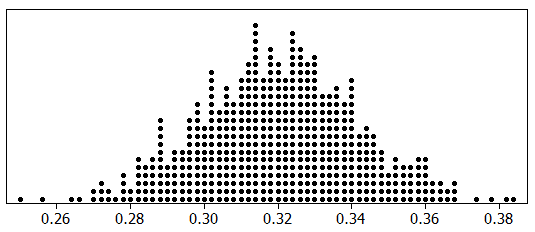
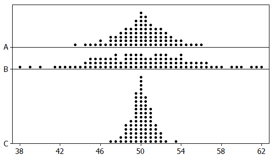

3.1 Sampling Distributions
Outline
Statistical inference
Statistics versus parameters
Sampling distributions
Variability of the statistic: standard error
Importance of sample size
Importance of random sampling
Warm-Up: Do It Again?
In October 2025, Pew Research Center surveyed 5,111 U.S. adults. 22% said they get health information from AI chatbots at least sometimes.
Turn and talk (60 sec):
1. If Pew repeated the survey the next week with a new random sample of 5,111 adults, would they get exactly 22% again?
2. Would they get something close to 22%? How close?
3. Is 22% the answer for all U.S. adults?
Statistical Inference
Statistical inference is the process of drawing conclusions about the entire population based on information in a sample.
A parameter is a number that describes some aspect of a population.
A statistic is a number that is computed from data in a sample.
Parameter vs Statistic
| Measure | Parameter | Statistic |
|---|---|---|
| Mean | \(\mu\) | \(\bar x\) |
| Proportion | \(p\) | \(\hat p\) |
| Std Dev | \(\sigma\) | \(s\) |
| Correlation | \(\rho\) | \(r\) |
- We use a statistic from a sample as a point estimate of the corresponding population parameter.
Example 1: Health Information from AI Chatbots
Back to Pew: Of 5,111 U.S. adults surveyed in October 2025, 22% reported getting health information from AI chatbots at least sometimes.
(a) Find the relevant proportion and give the correct notation with it.
(b) Is your answer to part (a) a parameter or a statistic?
(c) Give notation for and define the population parameter that we estimate using the result of part (a).
Example 2: Books Read in a Year
A survey of 2,986 Americans ages 16 and older found that 80% of them read at least one book in the last year. Of these book readers, the mean number of books read in the last year is 17, while the median is 8.
(a) How many “book readers” (read at least one book in the past year) were included in the sample?
(b) Why might the mean and median be so different? What is the likely shape of the distribution of books read by book readers?
Example 2 (continued)
Recall: among the book readers in the sample, the mean number of books read in the last year is 17 and the median is 8.
(c) Give the correct notation for the value 17. Is it a parameter or a statistic?
(d) Give notation for and define the population parameter that we estimate using the result of part (c).
Self-Quiz: Parameter or Statistic?
For each, state whether the quantity is a parameter or a statistic, and give the correct notation.
(a) The proportion of all residents in a county who smoke.
(b) The mean number of cigarettes smoked from a random sample of 50 smokers.
(c) The mean household size of all households in the U.S.
(d) The difference in proportion who have ever smoked cigarettes, between a sample of 500 people who are 60 years old and a sample of 200 people who are 25 years old.
Important Points
Sample statistics vary from sample to sample.
Key Questions For a given sample statistic,
What are plausible values for the population parameter?
How much uncertainty is associated with the sample statistic?
Key Answer It depends on how much the statistic varies from sample to sample!
Activity: M&M Sampling
Your cup is a random sample of M&Ms.
- Count your M&Ms: \(n =\)
- Count the orange ones:
- Compute your sample proportion
of orange: \(\hat p =\)
- Whole class combined:
proportion orange =

Before we look: will everyone get the same \(\hat p\)? How different could they be?
Sampling Distribution
A sampling distribution is the distribution of sample statistics computed for different samples of the same size from the same population.
- A sampling distribution shows us how the sample statistic varies from sample to sample.
StatKey: A Whole Lot More Cups
Our class gave us a few dozen \(\hat p\)’s. What if we could fill 1000 cups?
Open StatKey → Sampling Distributions: Proportion
- Click Edit Proportion and set \(p\) to our class proportion orange (pretend that’s the truth for all M&Ms).
- Set the sample size to \(n = 25\) (about one cup).
- Click Generate 1 Sample a few times. Each one is a new cup. Watch \(\hat p\) change.
- Now click Generate 1000 Samples.
With your partner:
* What does one dot represent?
* Where is the distribution centered?
* What shape is it? How does it compare with our class dotplot?
Center and Shape of Sampling Distributions
Center: If samples are randomly selected, the sampling distribution will be centered around the population parameter.
Shape: For most of the statistics we consider, if the sample size is large enough the sampling distribution will be symmetric and bell-shaped.
Caution: These results only hold for random samples and will not apply if the sampling method is biased.
Standard Error
To assess uncertainty of a statistic, we need to know its sampling variability, how much it varies from sample to sample.
Standard error (SE) is the standard deviation of a sample statistic.
The standard error measures how much the statistic varies from sample to sample.
The standard error of a statistic is just the standard deviation of its sampling distribution.
StatKey: How Much Do Cups Vary?
Back in StatKey (still our class \(p\), \(n = 25\), 1000+ samples):
Find the std. error in the summary box (upper right).
SE =
Turn and talk (30 sec): About 95% of the dots fall within 2 SE of the center. Was your cup’s \(\hat p\) inside that range?
Example 3: Proportion Never Married
Sampling distribution for the proportion of US citizens over 15 who have never been married, using 2010 US Census data and random samples of size \(n = 500\).

(a) What does one dot in the dotplot represent?
(b) Use the sampling distribution to estimate the proportion of all US citizens over 15 who have never been married. Give correct notation.
Example 3 (continued)
(c) How likely is each sample proportion from one random sample of 500?
| \(\hat p = 0.20\) | \(\hat p = 0.30\) | \(\hat p = 0.37\) | \(\hat p = 0.74\) |
|---|---|---|---|
(d) Estimate the standard error of the sampling distribution.
(e) If we took samples of size 1000 instead of 500, would the estimates be more or less accurate? Would the SE be larger or smaller? Predict first, then we’ll check in StatKey.
StatKey: Bigger Cups
What if each cup held 100 M&Ms (about four of ours poured together)?
Back to Sampling Distributions: Proportion with our class \(p\).
| Sample size | Std. error from StatKey |
|---|---|
| \(n = 25\) | |
| \(n = 100\) |
Turn and talk (60 sec):
1. Was your prediction right?
2. We made \(n\) 4 times bigger. What happened to the SE?
What Happens to Sampling Variability as the Sample Size Gets Larger?
As the sample size increases, the variability of the sampling distribution decreases.
As \(n\uparrow\), the statistic gets closer to the corresponding parameter.
As \(n\uparrow\), \(\text{SE}\downarrow\)
Self-Quiz: Effect of Sample Size
Three sampling distributions for a population with mean 50: one for \(n = 25\), one for \(n = 100\), one for \(n = 400\).

(a) Match each distribution with its sample size, and (b) estimate its standard error.
| \(n\) | SE | |
|---|---|---|
| A | ||
| B | ||
| C |
(c) Does the “4 times the sample size, half the SE” pattern hold?
Summary
- Statistical Inference
- Draw conclusions about a population from a sample.
- Parameters (e.g., \(\mu\), \(p\)) describe populations.
- Statistics (e.g., \(\bar{x}\), \(\hat p\)) describe samples.
- Key Concepts
- Sampling distributions show how statistics vary from sample to sample.
- Random samples result in sampling distributions centered around the population parameter.
- Large sample sizes often yield symmetric, bell-shaped sampling distributions.
- Standard Error (SE)
- SE quantifies sampling variability.
- SE decreases as sample size increases, indicating more precise estimates of the population parameter.
Summary (continued)
- Large samples…
- Reduce the standard error.
- Provide more accurate estimates of population parameters.
- Importance of Random Sampling
Random sampling …- Ensures unbiased and representative samples.
- Is critical for valid inferences.